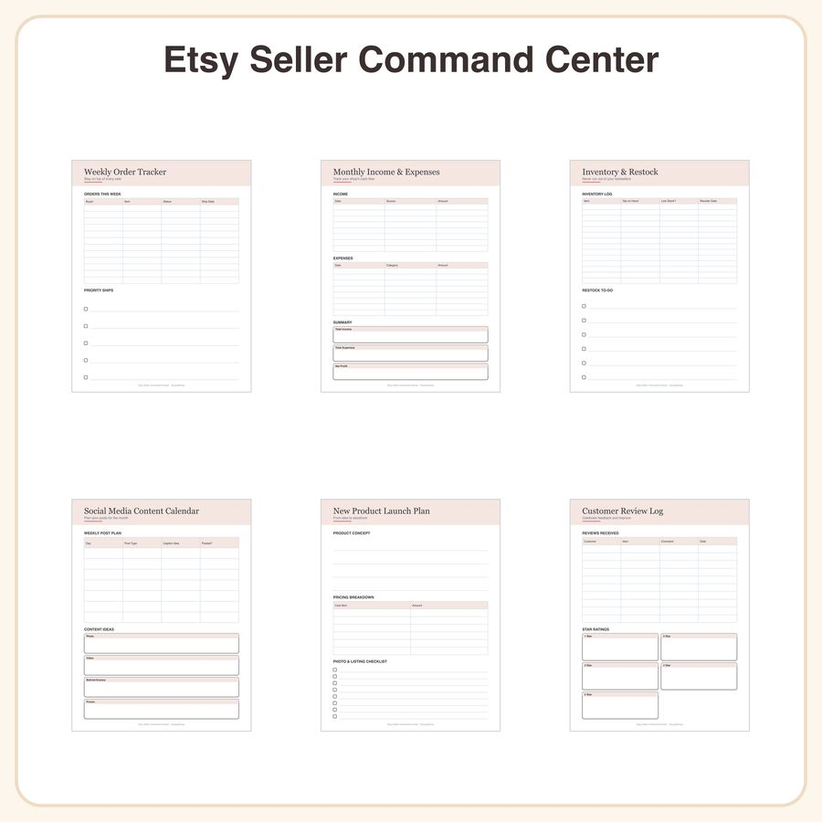

$6.99
Buy nowView on EtsyStop letting your shop run you. The Etsy Seller Command Center is a no-fluff printable planner built for handmade and Etsy sellers who need one clean place to track orders, money, stock, and content — no more sticky notes or scattered spreadsheets. What's included (14 pages): • 1 weekly order tracker grid — buyer, item, status, ship date columns • 4 monthly income & expense ledger pages with simple bar chart summary • 2 inventory & restock checklist pages with low-stock flag column • 2 social media content calendar pages with post-type icons • 2 new product launch planning pages — pricing & photo checklist • 3 customer review & feedback log pages with star rating boxes Design: soft blush-and-charcoal palette, thin geometric line dividers, and a friendly rounded sans-serif header font for a clean, modern feel that's easy to scan at a glance. File formats & sizes: • High-resolution PDF, US Letter (8.5x11in) and A4 sizes included • Print at home/copy shop, or use digitally • Hyperlinked tabs for GoodNotes / Notability navigation How to use: Print and fill by hand, or import into GoodNotes, Notability, or any PDF annotation app for a fully digital planning system on your tablet. License: For personal and small-business use, including creating up to 500 physical/digital units of your own products using this planner as a tool. You may not resell, share, or redistribute the files themselves. Honest note: These designs were created by our shop with the help of AI tools as part of our design process, then hand-finished and laid out by us.